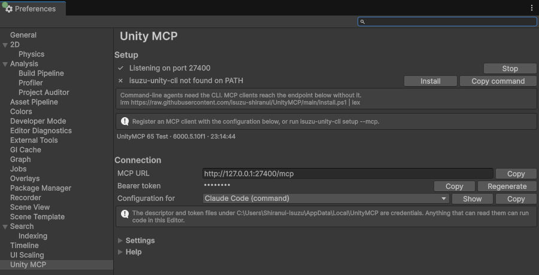

Getting started with Unity MCP
A package that connects the Unity Editor to an AI agent. Ask it something and it reads the scene, adds objects, and reads the errors in the Console. It works with Claude Code, Claude Desktop, Cursor, Codex, the Gemini CLI and VS Code.
One of the two routes needs no command line at all. You never have to open a terminal.

What you need
- Unity Editor 2022.3 or newer.
- Git, from git-scm.com. Unity uses it in step 1 to fetch the package. Without it the Package Manager stops with "No 'git' executable was found". The installer's defaults are fine. With VCC or ALCOM you can install the package the way the next section describes, and then Git is not needed.
- Route A uses Claude Desktop, because the extension format is theirs. It is distributed for Windows and macOS. On Linux, take route B.
- The project has to stay open in the Unity Editor while you use it.
VCC and ALCOM
If you manage your project with the VRChat Creator Companion (VCC) or with ALCOM, install the package from its VPM repository. That route needs no Git. VCC and ALCOM download a package as a zip, so neither calls Git the way Unity's Package Manager does.
The link below opens VCC or ALCOM and asks you to confirm that you want to add the repository. VCC 2.1.0 or newer is required.
If the link does nothing, add this URL by hand
https://unity-mcp.shiranui-isuzu.dev/vpm.jsonIn VCC that is the Add Repository button on the Packages tab of the Settings page. In ALCOM it is the Add Repository button on the Repositories page under Resources. Once the repository is added, Unity MCP appears in the project's package list. If you install this way, skip the first step of route A and of route B and start from the second.
Two routes
A. Without a command line
Five steps in all, and none of them is a command.
-
Add the package to Unity
In the Unity Editor, open Window > Package Manager. Press the + button at the top left, choose Add package from git URL, paste the URL below and press Add.
https://github.com/isuzu-shiranui/UnityMCP.git?path=jp.shiranui-isuzu.unity-mcp
Once it is added, Unity MCP appears in the Package Manager list. If you installed through VCC or ALCOM above, you have already done this. Go on to the next step.
-
Check that it is running
Open the Editor's Preferences window and choose Unity MCP in the list on the left. On Windows, Preferences is under the Edit menu. When the first row under Setup reads "✓ Listening on port", the Unity side is ready.
The server starts on its own when the project opens. There is nothing to start by hand. The CLI on the second row is not needed for this route.
-
Download the extension
Open the Releases page on GitHub and download the file called
isuzu-unity-cli.mcpb.
isuzu-unity-cli.mcpbis in the list called Assets on the Releases page. Clicking its name starts the download. -
Double-click it to install it in Claude Desktop
Double-clicking the downloaded file makes Claude Desktop show its extension install screen. Leave the Unity project name field empty when only one Unity project is open.
The extension is self-signed. Claude Desktop writes a note to its log about an unsigned extension while installing it. That does not affect how it runs. Dragging the file onto the window and choosing it under Settings > Extensions > Advanced settings > Install Extension both do the same thing.
If double-clicking closes the window immediately, that is a known symptom of the Microsoft Store build of Claude Desktop. Rename the file to
.zipand extract it. Then use Install Unpacked Extension on that same screen and pick the extracted folder. -
Ask it something
With the project open in the Unity Editor, write what you want in Claude Desktop. Nothing works while the Editor is closed.
B. With the command line
Install the command line tool isuzu-unity-cli. The binaries are native, so neither Node.js nor a .NET runtime is needed.
-
Add the package to Unity
The same as the first step of route A. Open Window > Package Manager and paste the URL below into Add package from git URL.
https://github.com/isuzu-shiranui/UnityMCP.git?path=jp.shiranui-isuzu.unity-mcpIf you installed through VCC or ALCOM above, you have already done this.
-
Install the command line tool
Run one line in a terminal.
Windows (PowerShell)
irm https://raw.githubusercontent.com/isuzu-shiranui/UnityMCP/main/install.ps1 | iexmacOS and Linux
curl -fsSL https://raw.githubusercontent.com/isuzu-shiranui/UnityMCP/main/install.sh | shWith the .NET SDK installed,
dotnet tool install -g IsuzuUnityCliworks too. You can also download a binary directly from Releases. The Install button under Preferences > Unity MCP in the Editor does the same thing. -
Install the agent skill
This installs the skill for Claude Code and Codex.
isuzu-unity-cli setup -
Register your client
One line registers the endpoint and the token. You never handle the token yourself.
isuzu-unity-cli setup --mcp --agent claude-code--agenttakesclaude-code,claude-desktop,codex,cursor,geminiorvscode. The Unity Editor has to be running for it to work. Every command is in the CLI reference, and the per-client configuration is in connecting an MCP client.
What it can do
- Read the scene hierarchy and find the GameObject you mean.
- Create GameObjects, add components, and change position, rotation and scale.
- Read and write the serialized properties shown in the Inspector.
- Read the errors and warnings in the Console, or read Editor.log directly.
- Capture the Game view or the Scene view.
- Read a material's current values and change them.
- Start and stop Play Mode.
The Editor publishes at most 88 tools. The Timeline and Recorder tools appear only in projects that have those packages installed, and the test tools need the Test Framework. A project with none of the three publishes 75 tools; with the Test Framework alone, which Unity installs by default, 77. The full list is in the tool reference.
If it does not work
-
The Unity Editor is not open
Every tool acts on a running Unity Editor, so nothing answers while the Editor is closed. Open the project again and check that the first row under Setup in Preferences > Unity MCP has a ✓.
-
Several projects are open
With more than one Unity Editor running, there is nothing to say which project to reach. Put the name from the Editor's title bar into the project name field in the extension's settings. The Product Name from Player Settings works too. If both names still match more than one Editor, closing the others is the reliable answer.
Read the per-client configuration -
The tools do not appear
Adding or removing a package changes which tools exist, and no notice of that is sent to the client. Reconnect the client you are using.
Read the troubleshooting page